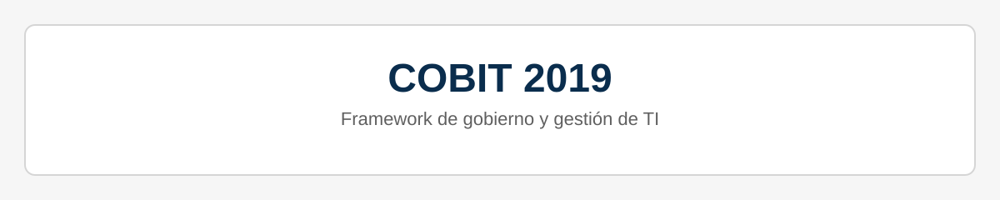

Cuentas globales
Datos de cuenta propios en Estados Unidos y Europa para enviar y recibir dinero internacionalmente.
Recorrido digital · 5–7 minutos
Explora cómo se relacionan los servicios de ARQ, el gobierno de TI y la seguridad de la información.
Bienvenida
Primero conoceremos los servicios; después, algunas prácticas que ayudan a organizarlos y gestionar su seguridad.
01 · El servicio
ARQ presenta servicios financieros para administrar y mover dinero entre distintos países. Explora cada servicio para conocer la información disponible.
Selecciona un servicio para conocer más.
Para ofrecerlos de forma confiable, ¿qué debe coordinarse?
02 · La gestión
Explora cuatro áreas que se relacionan con las responsabilidades, los riesgos y la supervisión de los servicios tecnológicos.
Selecciona un área para ver cómo se relaciona con la gestión de TI.
La propuesta distingue la supervisión estratégica de la Junta Directiva de la gestión operativa del equipo de TI.
COBIT 2019 es un marco de gobierno y gestión de tecnología; presentarlo aquí no significa que Banco ARQ esté certificado o cumpla con él.
03 · La protección
ISO/IEC 27001:2022 ofrece un marco para gestionar la seguridad. Explora estos tres conceptos fundamentales.
Selecciona un objetivo para leer una explicación sencilla.
Un marco orienta la gestión de la seguridad, pero no garantiza que nunca ocurran incidentes.
04 · Un ejemplo educativo
Ejemplo educativo: un servicio de cambio de divisas deja de estar disponible temporalmente. Explora los aspectos que pueden ayudar a analizar la situación. Todos pueden ser relevantes.
Puedes explorar uno o varios aspectos; no hay una única respuesta.
Este escenario sirve para explicar los conceptos: no describe un procedimiento interno confirmado de Banco ARQ.
05 · El mapa completo
La confianza digital depende de cómo se diseñan, gestionan y protegen los servicios.
Gobernanza · seguridad · cultura digital
Cómo gestionamos la tecnología y contribuimos a cuidar los servicios digitales.
Conoce los marcos y prácticas que orientan el gobierno de TI, la gestión de riesgos y la continuidad de los servicios digitales de Banco ARQ.

Finanzas globales
ARQ es una plataforma financiera global para personas que necesitan administrar y mover dinero entre distintos países. Anteriormente conocida como DollarApp, conecta a viajeros, trabajadores independientes, inversores y emprendedores con servicios financieros internacionales.
Datos de cuenta propios en Estados Unidos y Europa para enviar y recibir dinero internacionalmente.
Conversión a dólares digitales USDs y euros digitales EURc, según la propuesta de ARQ, a la tasa real del mercado.
Pagos en el exterior a la tasa de cambio real y beneficios de cashback.
Acceso a cuentas remuneradas, acciones e inversiones en fondos cotizados internacionales.
Gobernanza tecnológica
Es un marco de gobierno y gestión de tecnología que ayuda a organizar responsabilidades, evaluar riesgos y supervisar los servicios de TI.
La propuesta distingue la supervisión estratégica, a cargo de la Junta Directiva para evaluar riesgos y cumplimiento, de la gestión operativa del equipo de TI, enfocada en ciberseguridad, mantenimiento y entrega de servicios.
La intención es que las decisiones tecnológicas se mantengan alineadas con los objetivos de la organización y que los riesgos, las responsabilidades y el desempeño de TI puedan ser supervisados.
Qué significa para ti: una forma estructurada de cuidar la información, promover transacciones confiables y planificar la continuidad de los servicios, sin prometer que los riesgos desaparecen por completo.
Enfoque en confidencialidad, cifrado, control de acceso y autenticación.
Procesos que favorecen la precisión y trazabilidad de la información.
Planificación de infraestructura, disponibilidad y recuperación operativa.
Responsabilidades claras para evaluar riesgos y obligaciones aplicables.
Sistema de gestión de seguridad
ISO/IEC 27001:2022 es un estándar internacional para gestionar la seguridad de la información. En el contexto de Banco ARQ, sirve como referencia para organizar la protección de las operaciones digitales y de la información asociada al cambio de divisas.
La propuesta reúne controles tecnológicos, prácticas de desarrollo seguro, planificación de continuidad y formación del personal. Su aplicación debe alinearse con las obligaciones regulatorias pertinentes y las características de la plataforma.
Un enfoque organizado para reducir la exposición de tus datos, mantener la confiabilidad de las operaciones y prepararse ante interrupciones. Estas prácticas ayudan a gestionar riesgos, pero no eliminan la posibilidad de incidentes.
Controles orientados a limitar el acceso a datos personales y financieros.
Procesos para mantener la exactitud de la información y de las operaciones de cambio.
Planificación de continuidad y redundancia para responder ante interrupciones.
Presentación del proyecto
Presentación audiovisual de la propuesta de ARQ y su valor para usuarios internacionales.
Presentación del proyecto ARQ.
Actividades del curso
Autores: David Ricardo Salinas Pedrosa y Melissa Stefany Castro Pedraza
Autores: David Ricardo Salinas Pedrosa y Melissa Stefany Castro Pedraza
Autores: David Ricardo Salinas Pedrosa y Melissa Stefany Castro Pedraza
Autores: David Ricardo Salinas Pedrosa y Melissa Stefany Castro Pedraza
Autores: David Ricardo Salinas Pedrosa y Melissa Stefany Castro Pedraza